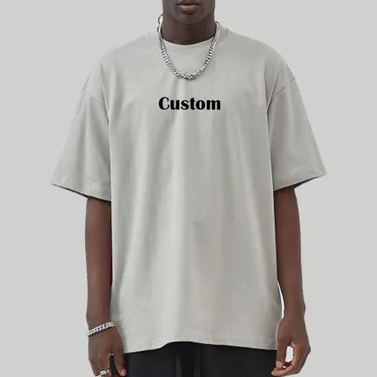
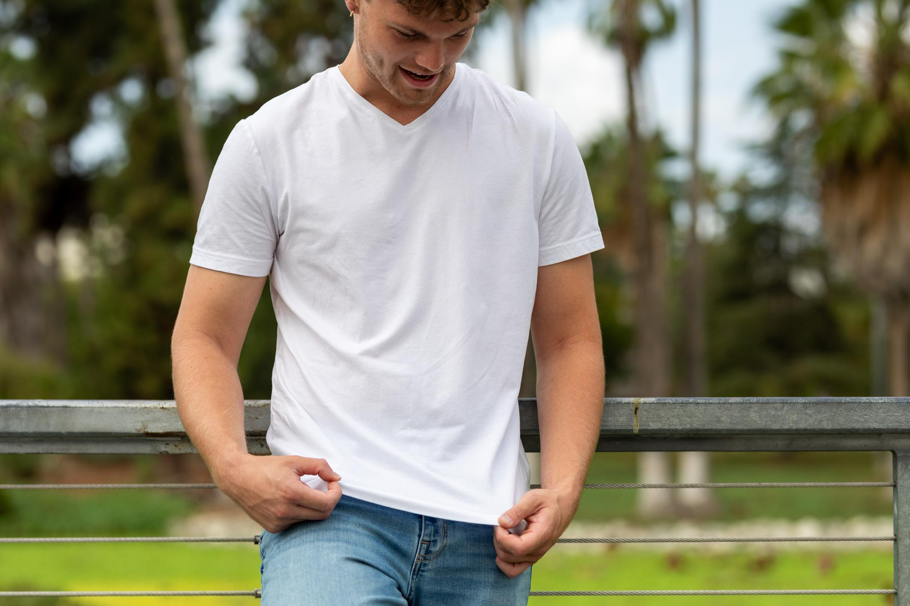
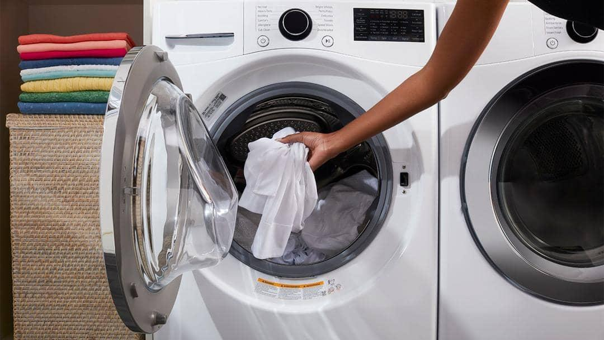
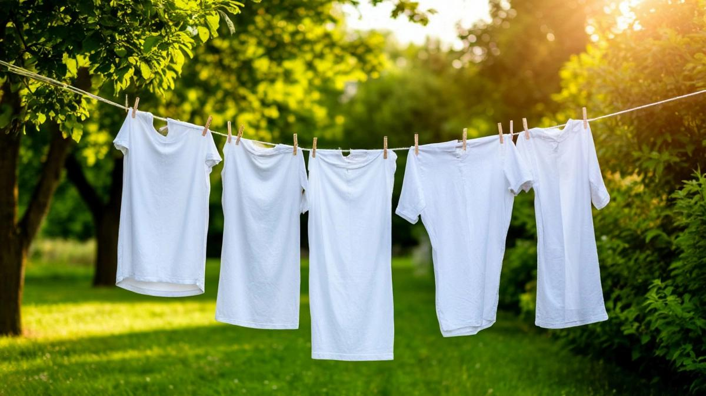

Use
Wearing, washing and caring for a T-shirt

Once a cotton T-shirt reaches the customer, it enters the use stage. During this stage, the garment is worn, washed, dried and sometimes ironed. These activities require water, electricity and other resources. How people care for their clothes also affects how long they remain usable.
👕 Key Facts
- A T-shirt can be worn many times before it needs replacing.
- Washing clothes uses water and electricity.
- Machine drying and ironing require additional energy.
- Frequent washing and rough handling can contribute to fabric wear.
- Repairing and caring for clothing can extend its useful life.
How We Use a T-shirt
Everyday clothing care involves several activities.

Wearing
The T-shirt is worn during everyday activities. Its useful life depends partly on how often it is worn and how well it is maintained.

Washing
Washing removes dirt and sweat from the garment. Washing machines use water and electricity during this process.

Drying and Caring
The T-shirt is dried and stored. Air drying can reduce electricity use compared with using a tumble dryer.
💡 How Can We Reduce Our Impact?
- Wash clothes only when they need cleaning.
- Use appropriate washing temperatures.
- Air dry clothes when possible.
- Repair small holes instead of immediately replacing a T-shirt.
- Wear and reuse clothing for as long as it remains usable.
What Happens Next?
Eventually, the T-shirt may become too small, damaged or unwanted. At this point, it enters the end-of-life stage, where it can be reused, donated, recycled or discarded.
Continue to End of Life →